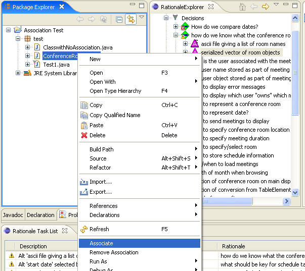
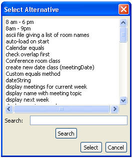
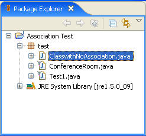

Code is associated with rationale by selecting the code in the Package Explorer and then choosing “Associate” by right-clicking on the alternative. This will display the name of the selected code item so the user can verify that this is the association they want.
Also, you could select an alternative and then right-click on the code file name in the Package Explorer and choose "Associate". If the item selected in the RationaleExplorer is not an alternative or nothing is selected, a Select Alternative window will be displayed to inform you to select an alternative. See the following figures:


The icon next to the class that contains the code will then be marked with a small rat icon. The following figure shows the Package Explorer where the classes MeetingDate and MeetingObj have rationale associated with them.
